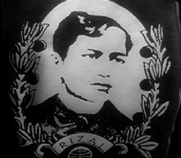

|
ULTIMO
Khavn de la Cruz | Phil. 2007 | 5 min.
Format: MiniDV
Material: MiniDV
Original language: Tagalog
Script: Khavn de la Cruz
Camera: Khavn de la Cruz
Editing: Lawrence S. Ang
Sound: Tengal Arvie Bartolome
Text: Jose Rizal
Cast: Teresa Lorenzo, Celia Blanco
Production: Filmless Films
A tribute-cum-reformulation-in-film of Philippine
National Hero Jose Rizal's poem "Mi último adíos". Philippine national hero Jose Rizal was the most prominent advocate for reforms on the Philippines. Rizal's 1896 military execution made him a martyr of the Philippine Revolution. "Mi último adíos" is the poem he worte on the eve of his death.
Khavn de la Cruz, born in 1973, in Manila, The Philippines, is a very outspoken, experimental film maker with an unstoppable desire to explore and cross all boudaries. He is the most productive film maker in the Philippines and probably also far beyond. Since 2002 he has been director of the MOV Digital Film Festival.
Films (selection): Lata at tsinelas 2004 | The Family that Easts Soil 2004| Waiting for a Super Hero 2005 | G-string Kings 2006 | An Open Letter to all the Terrorists of the World 2006| Squatterpunk 2007 | Ultimo 2007
back
|